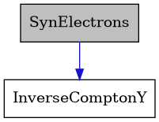
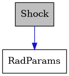

C++ API Reference
Overview
VegasAfterglow’s C++ core provides high-performance computation capabilities for GRB afterglow modeling. This section documents the C++ API for advanced users and developers who want to work directly with the C++ library. The library requires a C++20 compatible compiler.
Key Components
The C++ API is organized into several core components:
Jet Models: Implementations of different jet structure models (top-hat, Gaussian, power-law, and user-defined)
Ambient Medium: Classes for modeling the circumburst environment (ISM, wind, and user-defined)
Radiation Processes: Components for synchrotron emission, synchrotron self-absorption, and inverse Compton (with Klein-Nishina corrections)
Shock Dynamics: Forward and reverse shock physics with accurate evolution across relativistic and non-relativistic regimes
Observer Effects: Classes for handling off-axis viewing angles and relativistic beaming
Utilities: Helper functions and mathematical tools for GRB afterglow calculations
Using the C++ API
After compiling the library, you can create custom applications that use VegasAfterglow’s core functionality:
Including Headers
To use VegasAfterglow directly from C++, include the main header:
#include "afterglow.h" // Main header for afterglow models
Building Custom Applications
Compile your C++ application, linking against the VegasAfterglow library:
g++ -std=c++20 -I/path/to/VegasAfterglow/include -L/path/to/VegasAfterglow/lib -o my_program my_program.cpp -lvegasafterglow
Note
Replace /path/to/VegasAfterglow/ with the actual path to your VegasAfterglow installation.
C++ API Documentation
Jet Models
-
class TophatJet
Implements a tophat jet profile where properties are uniform within a core angle theta_c and zero outside.
This class provides a simple model for GRB jets with sharp edges, characterized by isotropic equivalent energy E_iso and initial Lorentz factor Gamma0 within the core angle.
Public Functions
-
inline TophatJet(Real theta_c, Real E_iso, Real Gamma0, bool spreading = false, Real T0 = 1 * unit::sec) noexcept
Constructor: Initialize with core angle, isotropic energy, and initial Lorentz factor.
- Parameters:
theta_c – Core angle of the jet
E_iso – Isotropic equivalent energy
Gamma0 – Initial Lorentz factor
T0 – Duration of the ejecta
spreading – Flag indicating if the ejecta spreads laterally during evolution
-
inline Real eps_k(Real phi, Real theta) const noexcept
Energy per solid angle as a function of phi and theta.
- Parameters:
phi – Azimuthal angle (unused)
theta – Polar angle
- Returns:
Energy per solid angle (eps_k_ if theta < theta_c_, 0 otherwise)
-
inline Real Gamma0(Real phi, Real theta) const noexcept
Initial Lorentz factor as a function of phi and theta.
- Parameters:
phi – Azimuthal angle (unused)
theta – Polar angle
- Returns:
Lorentz factor (Gamma0_ if theta < theta_c_, 1 otherwise)
-
inline TophatJet(Real theta_c, Real E_iso, Real Gamma0, bool spreading = false, Real T0 = 1 * unit::sec) noexcept
-
class GaussianJet
Implements a Gaussian jet profile where properties follow a Gaussian distribution with angles.
This class provides a smooth model for GRB jets, characterized by core angle theta_c, isotropic equivalent energy E_iso, and initial Lorentz factor Gamma0 at the center.
Public Functions
-
inline GaussianJet(Real theta_c, Real E_iso, Real Gamma0, bool spreading = false, Real T0 = 1 * unit::sec) noexcept
Constructor: Initialize with core angle, isotropic energy, and initial Lorentz factor.
- Parameters:
theta_c – Core angle of the jet
E_iso – Isotropic equivalent energy
Gamma0 – Initial Lorentz factor
T0 – Duration of the ejecta
spreading – Flag indicating if the ejecta spreads laterally during evolution
-
inline Real eps_k(Real phi, Real theta) const noexcept
Energy per solid angle as a function of phi and theta, with Gaussian falloff.
- Parameters:
phi – Azimuthal angle (unused)
theta – Polar angle
- Returns:
Energy per solid angle with Gaussian angular dependence
-
inline Real Gamma0(Real phi, Real theta) const noexcept
Initial Lorentz factor as a function of phi and theta, with Gaussian falloff.
- Parameters:
phi – Azimuthal angle (unused)
theta – Polar angle
- Returns:
Lorentz factor with Gaussian angular dependence
-
inline GaussianJet(Real theta_c, Real E_iso, Real Gamma0, bool spreading = false, Real T0 = 1 * unit::sec) noexcept
-
class PowerLawJet
Implements a power-law jet profile where properties follow a power-law distribution with angles.
This class provides a model for GRB jets with a power-law decay, characterized by core angle theta_c, isotropic equivalent energy E_iso, initial Lorentz factor Gamma0, and power-law index k.
Public Functions
-
inline PowerLawJet(Real theta_c, Real E_iso, Real Gamma0, Real k_e, Real k_g, bool spreading = false, Real T0 = 1 * unit::sec) noexcept
Constructor: Initialize with core angle, isotropic energy, initial Lorentz factor, and power-law index.
- Parameters:
theta_c – Core angle of the jet
E_iso – Isotropic equivalent energy
Gamma0 – Initial Lorentz factor
k_e – Power-law index
k_g – Power-law index
T0 – Duration of the ejecta
spreading – Flag indicating if the ejecta spreads laterally during evolution
-
inline Real eps_k(Real phi, Real theta) const noexcept
Energy per solid angle as a function of phi and theta, with power-law falloff.
- Parameters:
phi – Azimuthal angle (unused)
theta – Polar angle
- Returns:
Energy per solid angle with power-law angular dependence
-
inline Real Gamma0(Real phi, Real theta) const noexcept
Initial Lorentz factor as a function of phi and theta, with power-law falloff.
- Parameters:
phi – Azimuthal angle (unused)
theta – Polar angle
- Returns:
Lorentz factor with power-law angular dependence
-
inline PowerLawJet(Real theta_c, Real E_iso, Real Gamma0, Real k_e, Real k_g, bool spreading = false, Real T0 = 1 * unit::sec) noexcept
-
class Ejecta
Represents generic ejecta properties for a simulation.
Uses ternary functions (TernaryFunc) to accept user-defined ejecta that describes various quantities as functions of phi, theta, and time. This class encapsulates all the properties of the material ejected in a gamma-ray burst, including its energy, magnetization, and Lorentz factor profiles.
Public Functions
-
inline Ejecta(BinaryFunc eps_k, BinaryFunc Gamma0, BinaryFunc sigma0 = func::zero_2d, TernaryFunc deps_dt = func::zero_3d, TernaryFunc dm_dt = func::zero_3d, bool spreading = false, Real T0 = 1 * unit::sec) noexcept
Constructor: Initialize with core angle, isotropic energy, and initial Lorentz factor.
- Parameters:
eps_k – Energy per unit solid angle as a function of (phi, theta)
Gamma0 – Lorentz factor as a function of (phi, theta)
sigma0 – Magnetization parameter as a function of (phi, theta)
deps_dt – Energy injection rate per solid angle as a function of (phi, theta, t)
dm_dt – Mass injection rate per unit solid angle as a function of (phi, theta, t)
T0 – Duration of the ejecta
spreading – Flag indicating if the ejecta spreads laterally during evolution
-
Ejecta() = default
Public Members
-
BinaryFunc eps_k = {func::zero_2d}
Initial energy per unit solid angle as a function of (phi, theta)
-
BinaryFunc Gamma0 = {func::one_2d}
Lorentz factor profile in the ejecta as a function of (phi, theta) Default is uniform (one) across all angles.
-
BinaryFunc sigma0 = {func::zero_2d}
Initial magnetization parameter as a function of (phi, theta)
-
TernaryFunc deps_dt = {func::zero_3d}
Energy injection rate per solid angle as a function of (phi, theta, t) Default is no energy injection (zero)
-
TernaryFunc dm_dt = {func::zero_3d}
Mass injection rate per unit solid angle as a function of (phi, theta, t) Default is no mass injection (zero)
-
Real T0 = {1 * unit::sec}
Duration of the ejecta in seconds.
-
bool spreading = {false}
Flag indicating if the ejecta spreads laterally during evolution.
-
inline Ejecta(BinaryFunc eps_k, BinaryFunc Gamma0, BinaryFunc sigma0 = func::zero_2d, TernaryFunc deps_dt = func::zero_3d, TernaryFunc dm_dt = func::zero_3d, bool spreading = false, Real T0 = 1 * unit::sec) noexcept
Ambient Medium
-
class ISM
Implements a uniform interstellar medium (ISM) with constant density.
Provides methods to compute density at any position. The ISM is characterized by the particle number density n_ism.
Public Functions
-
inline explicit ISM(Real n_ism) noexcept
Constructor: Initialize with particle number density in cm^-3.
- Parameters:
n_ism – Particle number density in cm^-3
-
inline Real rho(Real phi, Real theta, Real r) const noexcept
Return density at a given position (constant everywhere)
- Parameters:
phi – Azimuthal angle (unused)
theta – Polar angle (unused)
r – Radial distance (unused)
- Returns:
Constant density value
-
inline Real mass(Real r) const noexcept
Enclosed mass per solid angle up to radius r.
Public Members
-
bool isotropic = {true}
Flag indicating if the medium is isotropic within computational domain.
-
inline explicit ISM(Real n_ism) noexcept
-
class Wind
Implements a stellar wind medium with density proportional to 1/r².
Provides methods to compute density at any position. The wind is characterized by the wind parameter A_star.
Public Functions
-
inline explicit Wind(Real A_star, Real n_ism = 0, Real n0 = con::inf) noexcept
Constructor: Initialize with wind parameter A_star (in standard units)
-
inline Real rho(Real phi, Real theta, Real r) const noexcept
Return density at given positions (proportional to 1/r²)
- Parameters:
phi – Azimuthal angle (unused)
theta – Polar angle (unused)
r – Radial distance
- Returns:
Density value at radius r (= A/r²)
-
inline Real mass(Real r) const noexcept
Enclosed mass per solid angle up to radius r.
-
inline Real A_param() const noexcept
Expose parameters for analytic integrals in hot dynamics setup paths.
-
inline Real rho_ism_param() const noexcept
-
inline Real r02_param() const noexcept
Public Members
-
bool isotropic = {true}
Flag indicating if the medium is isotropic within computational domain.
-
inline explicit Wind(Real A_star, Real n_ism = 0, Real n0 = con::inf) noexcept
-
class Medium
Represents the generic medium or any user-defined surrounding medium that the GRB jet interacts with.
The class provides methods to compute the density (rho) as a function of position (phi, theta, r).
Radiation Processes
Warning
doxygenstruct: Cannot find class “SynPhotons” in doxygen xml output for project “VegasAfterglow” from directory: ../doxygen/xml
-
struct SynElectrons
Collaboration diagram for SynElectrons:
Represents synchrotron-emitting electrons in the comoving frame along with their energy distribution and properties.
Public Functions
-
Real compute_N_gamma(Real gamma) const
Calculates the comoving electron number (PER SOLID ANGLE) spectrum at a specific Lorentz factor.
Includes corrections for inverse Compton cooling effects above the cooling Lorentz factor.
- Parameters:
gamma – Electron Lorentz factor
- Returns:
Column number density at the specified Lorentz factor
-
Real compute_column_den(Real gamma) const
Calculates the column number density of the electron distribution.
Uses the electron energy spectrum to compute the column number density.
- Returns:
Column number density of the electron distribution
Public Members
-
Real gamma_m = {0}
Minimum electron Lorentz factor.
-
Real gamma_c = {0}
Cooling electron Lorentz factor.
-
Real gamma_a = {0}
Self-absorption Lorentz factor.
-
Real gamma_M = {0}
Maximum electron Lorentz factor.
-
Real p = {2.3}
Power-law index for the electron energy distribution.
-
Real N_e = {0}
shock electron number PER SOLID ANGLE
-
Real column_den = {0}
Column number density.
-
Real Y_c = {0}
Inverse Compton Y parameter at cooling frequency.
-
size_t regime = {0}
Regime indicator (1-6, determines spectral shape)
-
InverseComptonY Ys
InverseComptonY parameters for this electron population.
-
Real compute_N_gamma(Real gamma) const
-
struct InverseComptonY
Handles Inverse Compton Y parameter calculations and related threshold values.
Public Functions
-
InverseComptonY(Real gamma_m, Real gamma_c, Real p, Real B, Real Y_T, bool is_KN) noexcept
Initializes an InverseComptonY object with frequency thresholds, magnetic field and Y parameter.
Computes characteristic gamma values and corresponding frequencies, then determines cooling regime.
- Parameters:
gamma_m – Characteristic Lorentz factor for the minimum Lorentz factor
gamma_c – Characteristic Lorentz factor for the cooling Lorentz factor
p – Spectral index of electron distribution
B – Magnetic field strength
Y_T – Thomson scattering Y parameter
-
InverseComptonY() noexcept
Default constructor that initializes all member variables to zero.
-
Real gamma_spectrum(Real gamma) const
Calculates the effective Y parameter for a given Lorentz factor and spectral index.
Different scaling relations apply depending on the cooling regime and gamma value.
- Parameters:
gamma – Electron Lorentz factor
- Returns:
The effective Y parameter at the given gamma
-
Real nu_spectrum(Real nu) const
Calculates the effective Y parameter for a given seed photon frequency.
Different scaling relations apply depending on the cooling regime and frequency value.
- Parameters:
nu – Seed photon frequency
- Returns:
The effective Y parameter at the given frequency
-
void update_cooling_breaks(Real gamma_c, Real Y_T) noexcept
Public Members
-
Real gamma_m_hat = {1}
Lorentz factor threshold for minimum energy electrons.
-
Real gamma_c_hat = {1}
Lorentz factor threshold for cooling electrons.
-
Real gamma_self = {1}
Lorentz factor threshold for gamma_self = gamma_self_hat.
-
Real gamma0 = {1}
Lorentz factor threshold for Y(gamma0) = 1.
-
Real Y_T = {0}
Thomson scattering Y parameter.
-
size_t regime = {0}
Indicator for the operating regime (1=fast IC cooling, 2=slow IC cooling, 3=special case)
-
InverseComptonY(Real gamma_m, Real gamma_c, Real p, Real B, Real Y_T, bool is_KN) noexcept
Shock Dynamics
-
class Shock
Collaboration diagram for Shock:
Represents a shock wave in an astrophysical environment.
The class stores physical properties of the shock across a 3D grid defined by azimuthal angle (phi), polar angle (theta), and time bins. Provides methods for shock calculations, including relativistic jump conditions, magnetic field calculations, and energy density computations.
Public Functions
-
Shock(size_t phi_size, size_t theta_size, size_t t_size, RadParams const &rad_params)
Constructs a Shock object with the given grid dimensions and energy fractions.
Initializes various 3D grids for storing physical properties of the shock, including comoving time, radius, Lorentz factors, magnetic fields, and downstream densities.
- Parameters:
phi_size – Number of grid points in the phi direction
theta_size – Number of grid points in theta direction
t_size – Number of grid points in time direction
rad_params – Radiation parameters
-
Shock() noexcept = default
-
inline auto shape() const
Returns grid dimensions as a tuple.
-
void resize(size_t phi_size, size_t theta_size, size_t t_size)
Resizes all grid components of the Shock object to new dimensions.
- Parameters:
phi_size – New number of grid points in the phi direction
theta_size – New number of grid points in theta direction
t_size – New number of grid points in time direction
-
template<typename Ejecta, typename Medium>
void detect_symmetry(Coord const &coord, Ejecta const &jet, Medium const &medium) Auto-detect symmetry by comparing jet initial conditions at consecutive theta grid points.
Sets symmetry and theta_reps. Falls back to structured if jet is spreading or medium is anisotropic.
-
void broadcast_groups(Array const &theta_coords)
Broadcasts computed dynamics to all grid points based on detected symmetry.
For isotropic, copies (0,0) to all (0,j), then phi=0 to all phi. For piecewise, copies each representative theta to its group, then phi=0 to all phi. For phi_symmetric, only broadcasts phi=0 to all phi (all thetas already computed).
- Parameters:
theta_coords – 1D array of theta coordinate values.
Public Members
-
MeshGrid3d t_comv
Comoving time.
-
MeshGrid3d r
Radius.
-
MeshGrid3d theta
Theta for jet spreading.
-
MeshGrid3d Gamma
Bulk Lorentz factor.
-
MeshGrid3d Gamma_th
Downstream internal Lorentz factor.
-
MeshGrid3d B
Comoving magnetic field.
-
MeshGrid3d N_p
Downstream proton number per solid angle.
-
IndexGrid injection_idx
Beyond which grid index there is no electron injection.
-
RadParams rad
Radiation parameters.
-
Symmetry symmetry = {Symmetry::structured}
Auto-detected symmetry level.
-
std::vector<size_t> theta_reps
Representative theta indices (contiguous groups)
-
Shock(size_t phi_size, size_t theta_size, size_t t_size, RadParams const &rad_params)
-
template<typename Ejecta, typename Medium>
class SimpleShockEqn Collaboration diagram for SimpleShockEqn:
![digraph {
graph [bgcolor="#00000000"]
node [shape=rectangle style=filled fillcolor="#FFFFFF" font=Helvetica padding=2]
edge [color="#1414CE"]
"3" [label="Ejecta" tooltip="Ejecta"]
"2" [label="Medium" tooltip="Medium"]
"4" [label="RadParams" tooltip="RadParams"]
"1" [label="SimpleShockEqn< Ejecta, Medium >" tooltip="SimpleShockEqn< Ejecta, Medium >" fillcolor="#BFBFBF"]
"1" -> "2" [dir=forward tooltip="usage"]
"1" -> "3" [dir=forward tooltip="usage"]
"1" -> "4" [dir=forward tooltip="usage"]
}](_images/graphviz-c862140313940c15101d7b3290f3a855e3bc18e6.png)
Represents the forward shock equation for a given Jet.
It defines a state vector and overloads operator() to compute the derivatives of the state with respect to time t. It also declares helper functions for the derivatives. Simple version from Huang et al. 2000
Public Functions
-
SimpleShockEqn(Medium const &medium, Ejecta const &ejecta, Real phi, Real theta, RadParams const &rad_params, Real theta_s)
Initializes a SimpleShockEqn object with medium, ejecta, and other parameters.
Creates a new shock equation object with references to the medium and ejecta along with the angular coordinates and energy fraction.
- Parameters:
medium – The medium through which the shock propagates
ejecta – The ejecta driving the shock
phi – Azimuthal angle
theta – Polar angle
rad_params – Radiation parameters
theta_s – Critical angle for jet spreading
-
void operator()(State const &state, State &diff, Real t) const noexcept
Computes the derivatives of the state variables with respect to engine time t.
Implements the system of ODEs for the simple shock model.
- Parameters:
state – Current state of the system
diff – Output derivatives to be populated
t – Current time
-
SimpleShockEqn(Medium const &medium, Ejecta const &ejecta, Real phi, Real theta, RadParams const &rad_params, Real theta_s)
-
template<typename Ejecta, typename Medium>
class ForwardShockEqn Collaboration diagram for ForwardShockEqn:
![digraph {
graph [bgcolor="#00000000"]
node [shape=rectangle style=filled fillcolor="#FFFFFF" font=Helvetica padding=2]
edge [color="#1414CE"]
"3" [label="Ejecta" tooltip="Ejecta"]
"1" [label="ForwardShockEqn< Ejecta, Medium >" tooltip="ForwardShockEqn< Ejecta, Medium >" fillcolor="#BFBFBF"]
"2" [label="Medium" tooltip="Medium"]
"4" [label="RadParams" tooltip="RadParams"]
"1" -> "2" [dir=forward tooltip="usage"]
"1" -> "3" [dir=forward tooltip="usage"]
"1" -> "4" [dir=forward tooltip="usage"]
}](_images/graphviz-22a1fb8ec4a8dabb24bde94fa53f1c3bca29987a.png)
Represents the forward shock equation for a given jet and medium.
It defines a state vector (with variable size based on template parameters) and overloads operator() to compute the derivatives of the state with respect to source time. It also declares helper functions for the derivatives. This class implements the physical equations governing the forward shock evolution.
- Template Parameters:
Ejecta – The ejecta class template parameter
Medium – The medium class template parameter
Public Functions
-
ForwardShockEqn(Medium const &medium, Ejecta const &ejecta, Real phi, Real theta, RadParams const &rad_params, Real theta_s)
ForwardShockEqn constructor.
Initializes the forward shock equation with the given medium, ejecta, and parameters.
- Parameters:
medium – The medium through which the shock propagates
ejecta – The ejecta driving the shock
phi – Azimuthal angle
theta – Polar angle
rad_params – Radiation parameters
theta_s – Critical angle for jet spreading
-
void operator()(State const &state, State &diff, Real t) const noexcept
Computes the derivatives of the state variables with respect to engine time t.
Implements the system of ODEs that describe the evolution of the forward shock.
- Parameters:
state – Current state of the system
diff – Output derivatives to be populated
t – Current time
-
template<typename Ejecta, typename Medium>
class FRShockEqn Collaboration diagram for FRShockEqn:
![digraph {
graph [bgcolor="#00000000"]
node [shape=rectangle style=filled fillcolor="#FFFFFF" font=Helvetica padding=2]
edge [color="#1414CE"]
"3" [label="Ejecta" tooltip="Ejecta"]
"1" [label="FRShockEqn< Ejecta, Medium >" tooltip="FRShockEqn< Ejecta, Medium >" fillcolor="#BFBFBF"]
"2" [label="Medium" tooltip="Medium"]
"4" [label="RadParams" tooltip="RadParams"]
"1" -> "2" [dir=forward tooltip="usage"]
"1" -> "3" [dir=forward tooltip="usage"]
"1" -> "4" [dir=forward tooltip="usage"]
}](_images/graphviz-be587240d55cc9af42c7bf1bad23398d0b7fdb52.png)
Represents the reverse shock (or forward-reverse shock) equation for a given Jet and medium.
It defines a state vector (an array of 8 Reals) and overloads operator() to compute the derivatives of the state with respect to radius r.
Public Functions
-
FRShockEqn(Medium const &medium, Ejecta const &ejecta, Real phi, Real theta, RadParams const &rad_fwd, RadParams const &rad_rvs)
Constructor for the FRShockEqn class.
Initializes the forward-reverse shock equation with the given medium, ejecta, and parameters.
- Parameters:
medium – The medium through which the shock propagates
ejecta – The ejecta driving the shock
phi – Azimuthal angle
theta – Polar angle
rad_fwd – Radiation params for forward shock
rad_rvs – Radiation params for reverse shock
-
void operator()(State const &state, State &diff, Real t) noexcept
Implements the reverse shock ODE system.
Computes the derivatives of state variables with respect to time.
- Parameters:
state – Current state of the system
diff – Output derivatives to be populated
t – Current time
-
void set_init_state(State &state, Real t0) const noexcept
Set the initial conditions for the reverse shock ODE.
Sets up initial state values and determines if the shock has already crossed.
- Parameters:
state – State vector to initialize
t0 – Initial time
-
Real compute_shell_sigma(State const &state) const noexcept
Calculates the magnetization parameter of the shell.
Sigma is defined as (ε/Γmc²) - 1, where ε is the energy per solid angle.
- Parameters:
state – Current state of the system
- Returns:
The magnetization parameter of the shell
-
void save_cross_state(State const &state)
Saves the state of the system at the crossing point.
- Parameters:
state – Current state of the system
Public Members
-
RadParams const rad_fwd
Radiation parameters for forward shock.
-
RadParams const rad_rvs
Radiation parameters for reverse shock.
-
Real const phi = {0}
Angular coordinate phi.
-
Real const theta0 = {0}
Angular coordinate theta.
-
Real Gamma4 = {1}
Initial Lorentz factor of the jet.
-
Real u_x = {0}
Reverse shock crossed four-velocity.
-
Real r_x = {0}
Reverse shock crossed radius.
-
Real B3_ordered_x = {0}
Ordered magnetic field in region 3 at crossing.
-
Real V3_comv_x = {0}
Comoving Volume in region 3 at crossing.
-
Real rho3_x = {0}
Density in region 3 at crossing.
-
FRShockEqn(Medium const &medium, Ejecta const &ejecta, Real phi, Real theta, RadParams const &rad_fwd, RadParams const &rad_rvs)
Physics and Utilities
-
class Observer
Represents an observer in the GRB afterglow simulation.
This class handles the calculation of observed quantities such as specific flux, integrated flux, and spectra. It accounts for relativistic effects (Doppler boosting), cosmological effects (redshift), and geometric effects (solid angle). The observer can be placed at any viewing angle relative to the jet axis.
Public Functions
-
Observer() = default
Default constructor.
-
void observe(Coord const &coord, Shock const &shock, Real luminosity_dist, Real redshift)
Sets up the Observer for flux calculation.
Initializes the observation time and Doppler factor grids, as well as the emission surface.
- Parameters:
coord – Coordinate grid containing angular information
shock – Shock object containing the evolution data
luminosity_dist – Luminosity distance to the source
redshift – Redshift of the source
-
template<typename PhotonGrid>
Array specific_flux(Array const &t_obs, Real nu_obs, PhotonGrid &photons) Sets up the Observer for flux calculation at specific observation times.
Similar to observe()
, but also marks required grid points for the given observation times.
Computes the specific flux at a single observed frequency
Returns the specific flux (as an Array) for a single observed frequency (nu_obs) by computing the specific flux over the observation times.- Parameters:
t_obs – Array of observation times
coord – Coordinate grid containing angular information
shock – Shock object containing the evolution data (modified to mark required points)
luminosity_dist – Luminosity distance to the source
redshift – Redshift of the source
t_obs – Array of observation times
nu_obs – Observed frequency
photons – Parameter pack of photon grid objects
- Template Parameters:
PhotonGrid – Types of photon grid objects
- Returns:
Array of specific flux values at each observation time
-
template<typename PhotonGrid>
MeshGrid specific_flux(Array const &t_obs, Array const &nu_obs, PhotonGrid &photons) Computes the specific flux at multiple observed frequencies.
Returns the specific flux (as a MeshGrid) for multiple observed frequencies (nu_obs) by computing the specific flux for each frequency and assembling the results into a grid. This method accounts for relativistic beaming and cosmological effects.
- Template Parameters:
PhotonGrid – Types of photon grid objects
- Parameters:
t_obs – Array of observation times
nu_obs – Array of observed frequencies
photons – Parameter pack of photon grid objects
- Returns:
2D grid of specific flux values (frequency × time)
-
template<typename PhotonGrid>
Array specific_flux_series(Array const &t_obs, Array const &nu_obs, PhotonGrid &photons) Computes the specific flux at a single observed frequency for multiple observation times.
- Template Parameters:
PhotonGrid – Types of photon grid objects
- Parameters:
t_obs – Array of observation times
nu_obs – Observed frequency
photons – Parameter pack of photon grid objects
- Returns:
Array of specific flux values at each observation time for a single observed frequency
-
template<typename PhotonGrid>
Array flux(Array const &t_obs, Array const &band_freq, PhotonGrid &photons) Computes the integrated flux over a frequency band.
Computes the integrated flux over a frequency band specified by band_freq. It converts band boundaries to center frequencies, computes the specific flux at each frequency, and integrates (sums) the flux contributions weighted by the frequency bin widths.
- Template Parameters:
PhotonGrid – Types of photon grid objects
- Parameters:
t_obs – Array of observation times
band_freq – Array of frequency band boundaries
photons – Parameter pack of photon grid objects
- Returns:
Array of integrated flux values at each observation time
-
template<typename PhotonGrid>
MeshGrid spectra(Array const &freqs, Array const &t_obs, PhotonGrid &photons) Computes the spectrum at multiple observation times.
Returns the spectra (as a MeshGrid) for multiple observation times by computing the specific flux for each frequency and transposing the result to get freq × time format.
- Template Parameters:
PhotonGrid – Types of photon grid objects
- Parameters:
freqs – Array of frequencies
t_obs – Array of observation times
photons – Parameter pack of photon grid objects
- Returns:
2D grid of spectra (frequency × time)
-
template<typename PhotonGrid>
Array spectrum(Array const &freqs, Real t_obs, PhotonGrid &photons) Computes the spectrum at a single observation time.
Returns the spectrum (as an Array) at a single observation time by computing the specific flux for each frequency in the given array.
- Template Parameters:
PhotonGrid – Types of photon grid objects
- Parameters:
freqs – Array of frequencies
t_obs – Single observation time
photons – Parameter pack of photon grid objects
- Returns:
Array containing the spectrum at the given time
-
void update_required(MaskGrid &required, Array const &t_obs)
Updates the required grid points for observation.
Identifies grid points needed for interpolation at requested observation times.
- Parameters:
required – Mask grid to mark required points (modified in-place)
t_obs – Array of observation times
-
Observer() = default
-
class Coord
Represents a coordinate system with arrays for phi, theta, and t.
This class is used to define the computational grid for GRB simulations. It stores the angular coordinates (phi, theta) and time (t) arrays, along with derived quantities needed for numerical calculations.
Performance Considerations
VegasAfterglow’s C++ core is designed for exceptional computational performance:
Memory Access Patterns: Carefully optimized to minimize cache misses
SIMD Optimizations: Takes advantage of vectorization where possible
Multi-threading: Core algorithms designed for parallel execution
Avoiding Allocations: Minimal heap allocations in critical computation paths
Computational Approximations: Efficient numerical approximations for complex computations
These optimizations enable the generation of a 30-point single-frequency light curve in approximately 0.6 milliseconds on an Apple M2 chip with a single core, and full MCMC parameter estimation with 10,000 steps in seconds to minutes on standard laptop hardware.
Documenting C++ Code
When contributing to the C++ codebase, please follow these documentation guidelines:
Class and Function Documentation
Use Doxygen-style comments for all classes and functions:
/********************************************************************************************************************
* @brief Brief description of the function/class
* @details Detailed description that provides more information
* about what this function/class does, how it works,
* and any important details users should know.
*
* @param param1 Description of first parameter
* @param param2 Description of second parameter
* @return Description of return value
* @throws Description of exceptions that might be thrown
* @see RelatedClass, related_function()
********************************************************************************************************************/
Member Variable Documentation
For member variables, use inline Doxygen comments with the triple-slash syntax:
double energy; ///< Isotropic-equivalent energy in ergs
double gamma0; ///< Initial bulk Lorentz factor
Template Function Documentation
For template functions, make sure to document both the template parameters and the function parameters:
/********************************************************************************************************************
* @brief Brief description of the template function
* @details Detailed description of what the template function does.
*
* @tparam T The type of elements in the vector
* @tparam Comparator The comparison function type
* @param values Vector of values to be sorted
* @param comparator Comparator function to determine sorting order
* @return Sorted vector of values
********************************************************************************************************************/
template<typename T, typename Comparator = std::less<T>>
std::vector<T> sort_values(const std::vector<T>& values, Comparator comparator = Comparator()) {
// Implementation details
}
Inline Function Documentation
For inline functions, use specialized documentation to explain why the function is inline and include important implementation details:
/**
* @brief Compute the square of a value
* @inlinefunc Performance-critical function used in inner loops
*
* @param x The value to square
* @return The squared value
*
* @inline_details
* Uses direct multiplication instead of std::pow for better performance.
* Handles both positive and negative inputs correctly.
*/
inline double square(double x) {
return x * x;
}
C++20 Attribute Documentation
For functions with C++20 attributes, use the specialized tags:
/**
* @brief Calculate the inverse of a value
* @nodiscard
* @constexpr
*
* @param value The input value (must not be zero)
* @return The inverse of the input value (1/value)
* @throws std::invalid_argument if value is zero
*/
[[nodiscard]] constexpr double inverse(double value) {
if (value == 0) throw std::invalid_argument("Cannot take inverse of zero");
return 1.0 / value;
}
Special Member Function Documentation
For special member functions, use the dedicated aliases:
/**
* @defaultctor
* Initializes with default empty state.
*/
JetModel();
/**
* @copyctor
* @param other The jet model to copy
*/
JetModel(const JetModel& other);
/**
* @moveassign
* @param other The jet model to move from
* @return Reference to this object
*/
JetModel& operator=(JetModel&& other) noexcept;
Private Member Documentation
Even though private members won’t appear in the public API documentation, they should be properly documented in the code for maintainability:
private:
/**
* @brief Calculate internal jet dynamics
*
* @param time Current simulation time
* @return Energy distribution at current time
*/
double calculateDynamics(double time);
double energy_; ///< Internal energy storage
Example Class
Here’s an example of a well-documented class:
/********************************************************************************************************************
* @class GaussianJet
* @brief Implements a Gaussian jet profile where properties follow a Gaussian distribution with angle.
* @details This class provides a smooth model for GRB jets, characterized by core angle theta_c,
* isotropic equivalent energy E_iso, and initial Lorentz factor Gamma0 at the center.
********************************************************************************************************************/
class GaussianJet {
public:
/********************************************************************************************************************
* @brief Constructor: Initialize with core angle, isotropic energy, and initial Lorentz factor
* @param theta_c Core angle of the jet
* @param E_iso Isotropic equivalent energy
* @param Gamma0 Initial Lorentz factor
********************************************************************************************************************/
GaussianJet(Real theta_c, Real E_iso, Real Gamma0) noexcept;
/********************************************************************************************************************
* @brief Energy per solid angle as a function of phi and theta, with Gaussian falloff
* @param phi Azimuthal angle (unused)
* @param theta Polar angle
* @return Energy per solid angle with Gaussian angular dependence
********************************************************************************************************************/
Real eps_k(Real phi, Real theta) const noexcept;
/**
* @brief Get the core angle of the jet
* @nodiscard
* @return Core angle in radians
*/
[[nodiscard]] inline Real getTheta_c() const noexcept;
/**
* @brief Get the isotropic equivalent energy
* @nodiscard
* @return Energy in ergs
*/
[[nodiscard]] inline Real getE_iso() const noexcept;
/**
* @brief Get the initial Lorentz factor
* @nodiscard
* @return Lorentz factor at jet core
*/
[[nodiscard]] inline Real getGamma0() const noexcept;
};
// Implementation of inline methods would be in the .cpp file or in a separate
// inline header file, and should not appear in the API documentation.
For more details on Doxygen commands, see the Contributing page.